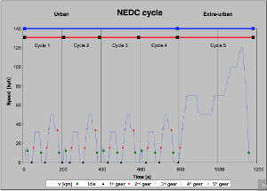
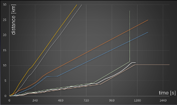

Inside the Volkswagen emissions cheating
In an interesting presentation [video link] at the 32nd Chaos Communication Congress (32C3) held at the end of December, Daniel Lange and Felix Domke gave a detailed look into the Volkswagen emissions scandal—from the technical side. Lange gave an overview of the industry, the testing regime, and the regulatory side in the first half, while Domke presented the results of his reverse-engineering effort on the code in the engine electronic control unit (ECU), as well as tests he ran on his own affected VW car. The presentation and accompanying slides [PDF] provide far more detail than has previously been available.
Lange is a former BMW engineer who now runs his own consulting company. Domke is an independent security researcher who became curious about how the code inside his car was gaming the emissions testing.
Some background
The VW scandal has made such an impact partly because of the sheer number of cars affected, which is roughly 11 million worldwide, Lange said. While VW has sought to pin the blame on a small number of engineers, the fact that 1500 hard disks and USB drives were confiscated as part of the investigation is a good indicator that many more employees were actually involved.

The "New European Driving Cycle" (NEDC) is the profile used for testing car emissions; a graph of it from the slides is seen at right. It shows the speed of the car over time as it is accelerated and decelerated during the test. A car is conditioned the day before the test by driving it fast on the autobahn, then it is put through this test regime on a dynamometer and the emissions are measured.
The profile is "very artificial", Lange said, as "nobody drives a car like this". As engineers get better and better at optimizing for the tests, the gap between the test results and real-world performance grows. Cars running on the street are getting better emissions due to this work as well, but less quickly than the test results. There are also a number of "borderline gray areas" that car makers exploit to improve performance in the tests, such as over-inflating the tires and altering wheel alignment. Essentially, engineers see the tests as an optimization problem and react accordingly.
The net result is that real-world emissions are 30 or more times higher than those in the tests. It has been known in the industry for quite some time that the tests are not really reflecting actual vehicle emissions, Lange said. It is not just VW vehicles, either, as many other vehicles show 30x less emissions in the tests than they do on the road.
Lange also noted that the automotive industry is particularly careful to document its entire development process. All software changes are tied to requirements documents and those documents are signed-off by multiple layers of management in the companies. So, unless there is a cover up, VW should be able to determine exactly who made the change and when it was done. It is "completely impossible" that some kind of rogue engineer simply inserted the cheating code into ECU, he said.
In addition, this not the first time a company has done this sort of thing. In 2000, BMW was caught doing something quite similar in the ECU of some motorcycles.
The engine ECU is typically provided by an outside company (Bosch in the VW cars) and runs proprietary code that contains a computer model of the engine. Car makers cannot change (or even see) that code, but the model is driven by some 20,000 variables that describe the engine and its functioning. There is just as much record-keeping in how and why those variables get changed as there is with other changes, so VW (or the investigators) should be able to see just how this all came about.
Reverse engineering
At that point, Domke took over (around the 40-minute mark in the video) to describe what he had found. He said that the cars affected are out there on the roads, so he should be able take one apart, get the firmware out of it, and see just what was going on. "The truth is in the code", he said.
In order to investigate, he needed an affected car and access to a dynamometer to run some tests. In addition, he needed an extra ECU that he could use to extract the firmware without damaging the car. As it turned out, he got a letter from VW that said his car was one of those affected, so he could use it for the testing.
He got a Bosch EDC17C46 ECU from eBay, applied 12V to it, and watched it boot. It complained about missing sensors and such, but it was executing code. It did not have exactly the same firmware as is in his car, but it was close. He then discovered a flaw that allowed him to extract the 2MB flash firmware image from the TriCore CPU on the board. That bug was effectively a zero-day, since he did not find anyone else reporting it, but it was not all that difficult to work out, he said.
He then disassembled the firmware, which looked quite a bit different than disassemblies of normal code. It looked somewhat like electronic schematics had been turned into code, rather than spaghetti-like output from other kinds of programs, he said. One thing he noticed is that the program is all data-driven and there is a large part of the firmware that is simply data. Those are the 20,000 variables used to change the model in the ECU for the specific engine in the vehicle.
Basically, an engine ECU takes input from the throttle and controls the air and fuel mixture that goes to the engine to produce the engine power requested. But there is a lot more than that these days. One of the things that ECUs control is the emissions systems—and that is where he looked to determine how the cheating was done.
By using the OBD-II port on the car, he was able to extract a wealth of information from the ECU. There is some status information that the manufacturer makes available directly, but access to almost any of the other parameters is available in developer mode—if you know the address. He tracked down various "A2L" files that map these parameters to addresses and, though he wasn't able to get the exact set for his car, he got enough information to be able to access the information he wanted.
As an example of the kinds of complicated processing the ECU does, he noted that there is a 12KB block of code that is used to ensure the tachometer always shows 780 RPM when the car is idling. Even though the engine is not that steady, car owners want to see that value hold steady at idle, so car makers effectively lie to satisfy them. Domke said that it is clear that lots of different kinds of cheating is going on in the ECU and noted that the speedometer doesn't really show the speed of the vehicle, just something related to it.
Emissions
He then moved on to the emissions system and, specifically, the selective catalytic reduction (SCR) system. The idea behind SCR is to reduce NOx (NO and NO2) emissions from diesel engines. It does so by using a solution of urea and water (called "AdBlue" in Germany) to change the NOx to nitrogen and water.
However, the right amount of AdBlue to use is important and hard to get right. Too little will still convert some of the NOx, which is better than nothing, but too much will produce ammonia, which is definitely not wanted. So the goal of the emissions system should be to eliminate as much NOx as possible without emitting much (if any) ammonia.
The SCR is also modeled in the ECU. It takes sensor readings and outputs from other models and produces an amount of AdBlue to use. Ideally, that would be the right amount to eliminate NOx, but emit no ammonia. There is also a separate monitoring function that will trigger an OBD-II error if the efficiency of the conversions is too low. That might cause a "check engine" condition so that the owner takes the car in for service.
It turns out that the standard SCR model does not work under all conditions (e.g. if the engine is too hot), so there is an alternative model that runs in parallel. It is a much simpler model, with fewer inputs, that has the goal of never adding too much AdBlue. There is code in the ECU that determines which model to use, and that code depends on the data provided by the car maker. In addition, the ECU stores information about which model is chosen at each ten-millisecond interval.
The conditions that determine which model is chosen are all ORed together to decide when to switch to the alternate model. Many of those conditions were impossible (e.g. air temperature greater than 3276.8°K or less than 0.1°K), but one was particularly strange since it always evaluated to true (engine temperature greater than -3276.8°K), which meant that the OR would evaluate to true, thus the alternative model should always be chosen.
That all seemed pretty strange to Domke, so he drove his car while recording which models it used. It turned out that around 20% of the time it was in a mode where it did no AdBlue injection at all since the engine was warming up. Most of the rest of the time, the engine used the alternate model, but, interestingly, there was still some small sliver of time where it used the standard SCR model.
He noted that this fit well with the usage of AdBlue by his car. For best conversion efficiency, you would expect to use 2.5L of AdBlue for 1000km of driving, but his car only used 0.6L over that distance.
He was puzzled about how the standard model was ever chosen, though, based on his earlier investigation. So he dug back in and found another set of criteria that is used in the model selection. These "unlock conditions" would force the ECU to use the standard model under a fairly odd set of conditions. The engine must be at 15°C or more and it must be running where the atmospheric pressure is more than that at 750m. But, most strangely, the driving profile must also fit within a set of seven linear "curves" that were defined in terms of minimums and maximums of distance-driven versus time-since-motor start.

As might be guessed, converting the NEDC curves to that system results in a curve that neatly fits in between two of those defined in the ECU. When the car operates within those parameters, the standard model, with its much lower emissions, would be triggered. Part of the testing regime is that all cars are warmed to 20°C overnight before the test and, presumably, all of the testing centers are well below 750m in elevation. The slide showing the ECU lines with the converted NEDC curves overlaid (seen at right) was greeted with loud applause.
To verify his results, Domke put his car on the dynamometer while recording various parameters (e.g. SCR model used, AdBlue added) from the OBD-II. He followed the NEDC testing profile, then ran the car at a faster speed that was outside of that particular range. As might be expected, while he was NEDC-compliant, the standard model was chosen and quite a bit of AdBlue was used. Once he got out of that range, the car switched to using the alternative model and the AdBlue usage dropped to near zero. Presumably, the alternative model provides better driving performance, while pumping out far more emissions.
At the end of the talk, Domke did have something of disclaimer. He was not able to externally test the NOx emissions due to lack of equipment, for one thing. In addition, he made a "best effort" at understanding the code and what the model was doing, but could have made a mistake in there somewhere. But the dynamometer testing does match up well with what he found and it is all consistent with what VW has said in its various press releases on the matter.
Overall, it is an interesting "detective story" of sorts, but it also shows just how much is going on behind the scenes in our cars and other devices we rely on every day. Even in a highly regulated industry like automobiles, though, there is plenty of wiggle room for companies to try to outcompete other car makers—or to outfox regulators. It is unclear how widespread this kind of cheating is in the industry, but it seems likely we will hear about more of this kind of chicanery in coming years.
| Index entries for this article | |
|---|---|
| Security | Automotive |
| Security | Reverse engineering |
Posted Jan 7, 2016 3:38 UTC (Thu)
by luto (subscriber, #39314)
[Link] (3 responses)
Posted Jan 7, 2016 7:36 UTC (Thu)
by burki99 (subscriber, #17149)
[Link]
Posted Jan 7, 2016 8:43 UTC (Thu)
by HybridAU (guest, #85157)
[Link]
That meant VW cars would use less fuel (which is something customers can easily measure themselves, often talk about, and would influence purchases) and feel more powerful when taking them for a test drive and comparing with other cars in a similar range which (probably) do meet emissions standards. So the incentive may have been around sales.
Posted Jan 8, 2016 0:22 UTC (Fri)
by felixfix (subscriber, #242)
[Link]
But as the self-assessed deadline approached and the engineers couldn't make their diesels run clean without AdBlue, they resorted to a one time, temporary fix of perverting the pollution control software, fully expecting it to be taken out soon. Unfortunately, they couldn't make their diesels run clean, and the CEO was not the type to lose face by admitting so, so the perverted software remained.
That certainly sounds plausible to me. Whether it's true or not will probably never be known publicly, even though the tyrant CEO is now gone.
Posted Jan 7, 2016 6:14 UTC (Thu)
by alonz (subscriber, #815)
[Link] (21 responses)
Domke […] noted that the speedometer doesn't really show the speed of the vehicle
Could speeders now claim that their car showed a completely different speed to the one they were ticketed for?
Posted Jan 7, 2016 10:29 UTC (Thu)
by andy_shev (subscriber, #75870)
[Link] (7 responses)
Posted Jan 7, 2016 12:53 UTC (Thu)
by NAR (subscriber, #1313)
[Link] (2 responses)
Posted Jan 8, 2016 21:11 UTC (Fri)
by ken (subscriber, #625)
[Link] (1 responses)
Posted Jan 10, 2016 0:55 UTC (Sun)
by giraffedata (guest, #1954)
[Link]
Posted Jan 7, 2016 17:47 UTC (Thu)
by ssam (guest, #46587)
[Link] (3 responses)
Posted Jan 12, 2016 11:42 UTC (Tue)
by javispedro (guest, #83660)
[Link]
Posted Jan 12, 2016 12:53 UTC (Tue)
by Sesse (subscriber, #53779)
[Link] (1 responses)
Posted Jan 28, 2016 16:38 UTC (Thu)
by mathstuf (subscriber, #69389)
[Link]
Posted Jan 7, 2016 11:41 UTC (Thu)
by JdGordy (subscriber, #70103)
[Link]
Posted Jan 7, 2016 14:51 UTC (Thu)
by paulj (subscriber, #341)
[Link] (9 responses)
Is my vague memory and guess. ;)
Posted Jan 7, 2016 15:35 UTC (Thu)
by nybble41 (subscriber, #55106)
[Link] (2 responses)
Posted Jan 8, 2016 13:58 UTC (Fri)
by NAR (subscriber, #1313)
[Link]
Interestingly there are also minimum speed limits, for example 100 km/h on motorway in left lane on some steep parts - there the driver might say that he was over the minimum limit according to the speedometer, but in fact was slower. I don't think anyone ever fined for this.
Posted Jan 8, 2016 20:12 UTC (Fri)
by anselm (subscriber, #2796)
[Link]
IIRC, here in Germany the speedometer in a car may not display a speed that is less than the speed the car is actually travelling at, while in the other direction the maximum allowed tolerance is something like 10% of the highest speed printed on the speedometer scale. So if the highest speed on the scale is 200 km/h, the speedometer may display a speed that is up to 20 km/h faster than the actual speed. This leads to even small cars with wimpy engines having speedometers that go up to fairly impressive speeds which are way beyond what the car could actually reach – even, as we say “at full throttle, downhill with the wind at its back, and homesick”.
If you're cited for speeding, there is an automatic allowance for “manufacturing tolerances” that would let you get away with somewhat more than 50 km/h in a 50-km/h zone. Even so, you don't get to claim that your speedometer showed less than the actual speed of the car. Manufacturers calibrate the speedometers to display a higher speed on purpose, so people that drive such that the speedometer value matches the posted speed limit are actually safely below the speed limit.
Posted Jan 7, 2016 17:02 UTC (Thu)
by pjones (subscriber, #31722)
[Link] (2 responses)
If you look on VW and Mini web forums (merely the two vendors I've had cause to look at in the past), the first thing people notice when they hook phones and such up to OBD2 to display real time data is that GPS and OBD2 display the same speed more or less, but the speedometer readout is usually ~2.5mph faster when moving at speed.
I don't know if OBD2 is required to show the real measured speed or not, but on those vehicles it does.
Posted Jan 8, 2016 13:03 UTC (Fri)
by mchouque (subscriber, #62087)
[Link]
Posted Jan 9, 2016 18:45 UTC (Sat)
by jdulaney (subscriber, #83672)
[Link]
Posted Jan 7, 2016 19:12 UTC (Thu)
by jhhaller (guest, #56103)
[Link] (1 responses)
Posted Jan 7, 2016 19:34 UTC (Thu)
by pjones (subscriber, #31722)
[Link]
There certainly *are* GPS speedometers - they're common for kit cars, and google finds plenty of them for sale. It's worth noting those cars don't have to comply with the FCR/NHTSA/FMVSS requirements for a new retail consumer vehicle; they still have to have a speedometer to be street legal to get a VIN assigned, but the rule that says it must reflect a higher-than-measured value at 50MPH, AFAICS, does not apply. Emissions standards are also applied differently in many cases.
Posted Jan 7, 2016 20:47 UTC (Thu)
by mstone_ (subscriber, #66309)
[Link]
Posted Jan 7, 2016 20:48 UTC (Thu)
by mstone_ (subscriber, #66309)
[Link]
Posted Jan 8, 2016 15:13 UTC (Fri)
by kokada (subscriber, #92849)
[Link]
And it is not completely unrelated, it is off by 10% at maximum.
Posted Jan 7, 2016 8:20 UTC (Thu)
by nhippi (subscriber, #34640)
[Link]
Posted Jan 7, 2016 10:44 UTC (Thu)
by osma (guest, #6912)
[Link] (2 responses)
Posted Jan 7, 2016 13:20 UTC (Thu)
by pwfxq (subscriber, #84695)
[Link]
Bosch were certainly aware of what VW were up to. There are leaked emails from Bosch telling VW what they were doing was wrong.
Posted Jan 7, 2016 20:18 UTC (Thu)
by pbonzini (subscriber, #60935)
[Link]
Posted Jan 7, 2016 12:09 UTC (Thu)
by stevem (subscriber, #1512)
[Link]
Posted Jan 8, 2016 11:17 UTC (Fri)
by branden (guest, #7029)
[Link] (3 responses)
Minor correction: kelvins are not degrees; they're just kelvins. So one would write, e.g., "273 K", not "273°K".
And I love the use of a signed 16-bit integer to represent decikelvins. :D
Posted Jan 8, 2016 16:59 UTC (Fri)
by pr1268 (guest, #24648)
[Link] (2 responses)
Why signed? Recent scientific research notwithstanding, I don't think temperatures below 0 [d]K would ever be measured by this system. Unless they were using negative values as error codes, etc. (Disclosure: I haven't [yet] read the documents linked above.)
Posted Jan 8, 2016 22:07 UTC (Fri)
by pbonzini (subscriber, #60935)
[Link]
Posted Jan 9, 2016 22:53 UTC (Sat)
by mrkrad (guest, #106224)
[Link]
back in the days of old 8-bit ecu's a linear look-up-table's 1st result would be used as a failsafe when a sensor was unplugged to lock in a value (for say coolant to timing adjustment), allowing one to unplug the coolant temp sensor and manually set the distributor timing! Talking about 1st generation VW ecu's here. but bosch had their hand in the design as well back then!
Inside the Volkswagen emissions cheating
Inside the Volkswagen emissions cheating
Inside the Volkswagen emissions cheating
Inside the Volkswagen emissions cheating
I am wondering…
Inside the Volkswagen emissions cheating
Inside the Volkswagen emissions cheating
Inside the Volkswagen emissions cheating
Inside the Volkswagen emissions cheating
You misread the comment. It says the GPS reading, which is presumed to be correct, is 10-15% slower than the speedometer reading. So the speedometer overstates the speed and you cannot break the speed limit by driving by the speedometer.
Lying speedometers
Inside the Volkswagen emissions cheating
Inside the Volkswagen emissions cheating
Inside the Volkswagen emissions cheating
Inside the Volkswagen emissions cheating
Inside the Volkswagen emissions cheating
Inside the Volkswagen emissions cheating
Inside the Volkswagen emissions cheating
Inside the Volkswagen emissions cheating
Inside the Volkswagen emissions cheating
Inside the Volkswagen emissions cheating
Indeed
Inside the Volkswagen emissions cheating
Inside the Volkswagen emissions cheating
Inside the Volkswagen emissions cheating
Inside the Volkswagen emissions cheating
Inside the Volkswagen emissions cheating
Inside the Volkswagen emissions cheating
Inside the Volkswagen emissions cheating
VW cheated because they didn't want to install AdBlue injector, and instead claimed that they can meet emission guidelines without it. I take the structure of cheat was still the same on older VW's diesels.
Inside the Volkswagen emissions cheating
Inside the Volkswagen emissions cheating
Inside the Volkswagen emissions cheating
Inside the Volkswagen emissions cheating
Inside the Volkswagen emissions cheating
Why signed?
use of a signed 16-bit integer to represent decikelvins
Why signed?
Why signed?